집사남
부천시 소사구 송내동
볼라드 맞춤 시공
1개 소량 설치도 눈치 보지 마세요!
야간/주말 상담 및 시공가능합니다.
☎ 010-2610-4537
🛠️ 볼라드 및 시공 사례
시공 전
시공 후
📍 전용 차량 진입방지 매립이동식 스텐볼라드 파손 교체
차량 충돌로 훼손된 기존 볼라드를 철거하고,
내구성이 뛰어난 스텐볼라드로 튼튼하게 교체 시공하여
외부 차량의 무단 진입을 완벽히 차단했습니다.
내구성이 뛰어난 스텐볼라드로 튼튼하게 교체 시공하여
외부 차량의 무단 진입을 완벽히 차단했습니다.
시공 전
시공 후
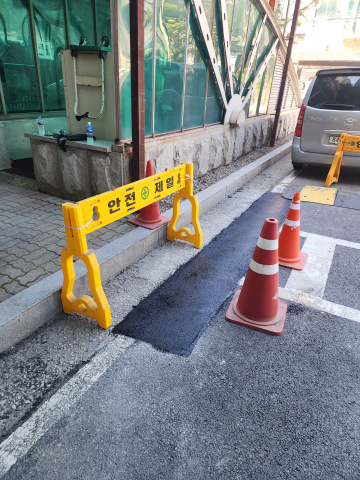
📍 오피스텔 주차장 진입로 바닥 파손 아스콘 부분보수
노후화되어 심하게 파인 주차장 진입로 바닥을
새 아스콘으로 평탄화 및 꼼꼼하게 땜빵 보수하여
차량의 덜컹거림과 타이어 손상 위험을 해결했습니다.
새 아스콘으로 평탄화 및 꼼꼼하게 땜빵 보수하여
차량의 덜컹거림과 타이어 손상 위험을 해결했습니다.
시공 전
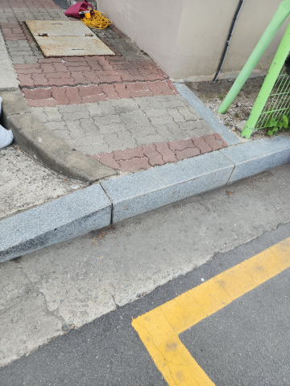
시공 후
📍 아파트 진입로 단차 차량진입판 설치
경계석 단차가 높아 통행이 불편했던 아파트 진입로에
충격 흡수에 탁월한 고무 재질의 차량진입판을 시공하여
차량 하부 긁힘 없는 부드러운 진출입이 가능해졌습니다.
충격 흡수에 탁월한 고무 재질의 차량진입판을 시공하여
차량 하부 긁힘 없는 부드러운 진출입이 가능해졌습니다.
시공 전
시공 후
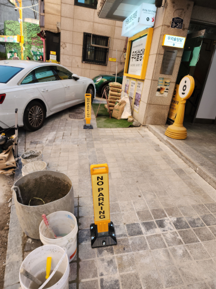
📍 가게 앞 주차금지봉 설치
가게 앞 무단 주차로 인한 영업 방해를 차단하기 위해
누구나 손쉽게 접고 펼 수 있는 자물쇠형 주차금지봉을 시공하여
상가 전용 주차 공간을 확실하게 확보했습니다.
누구나 손쉽게 접고 펼 수 있는 자물쇠형 주차금지봉을 시공하여
상가 전용 주차 공간을 확실하게 확보했습니다.
시공 전
시공 후
📍 아파트 지하주차장 코너보호대 파손 교체
주차 중 잦은 접촉으로 찢어진 기존 코너가드를 철거 후,
시인성이 뛰어난 새 고강도 코너보호대로 교체 부착하여
건물 벽면과 입주민의 차량을 동시에 보호합니다.
시인성이 뛰어난 새 고강도 코너보호대로 교체 부착하여
건물 벽면과 입주민의 차량을 동시에 보호합니다.
시공 전
시공 후
📍 창고 입구 벽부형 반사경 설치
지게차와 화물차 이동이 잦은 창고 출입구 사각지대에
시인성 좋은 벽부형 반사경을 최적의 각도로 설치하여
충돌 사고 위험을 확실하게 낮췄습니다.
시인성 좋은 벽부형 반사경을 최적의 각도로 설치하여
충돌 사고 위험을 확실하게 낮췄습니다.
시공 전
시공 후
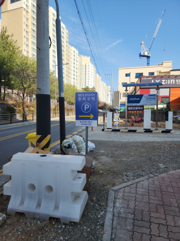
📍 상가 전용 주차장 표지판 매립
지정 주차 구역 안내를 확실히 명시하기 위해
바닥을 깊게 천공하고 고강도 시멘트를 타설하는 매립 시공으로
강풍에도 흔들림 없는 지주형 표지판을 세웠습니다.
바닥을 깊게 천공하고 고강도 시멘트를 타설하는 매립 시공으로
강풍에도 흔들림 없는 지주형 표지판을 세웠습니다.
시공 전
시공 후
📍 상가 앞 주차장 카스토퍼 설치
주차 시 후면 벽체와의 충돌을 완벽하게 막기 위해
주차 구역 라인에 국산 3구 고강도 카스토퍼를
차량 규격에 맞춰 안전하고 단단하게 고정했습니다.
주차 구역 라인에 국산 3구 고강도 카스토퍼를
차량 규격에 맞춰 안전하고 단단하게 고정했습니다.
시공 전
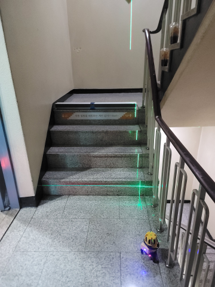
시공 후
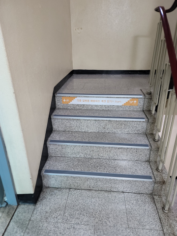
📍 꼬마빌딩 실내계단 논슬립패드 설치
비와 눈으로 미끄러운 꼬마빌딩 실내 계단에
접착력이 우수한 고강도 알루미늄 논슬립패드를 설치해
보행자의 낙상 사고를 예방하는 환경을 조성했습니다.
접착력이 우수한 고강도 알루미늄 논슬립패드를 설치해
보행자의 낙상 사고를 예방하는 환경을 조성했습니다.
시공 전
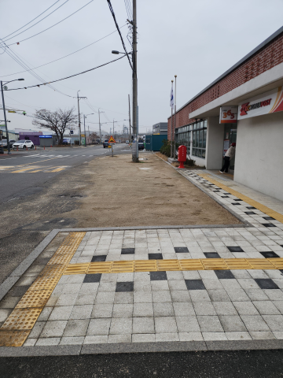
시공 후
📍 관공서 입구 차선규제봉 설치
고질적인 불법 주정차 방지 및 명확한 차선 분리를 위해
복원력이 우수한 폴리우레탄 차선규제봉(시선유도봉)을
정확한 간격과 튼튼한 앙카 작업으로 고정했습니다.
복원력이 우수한 폴리우레탄 차선규제봉(시선유도봉)을
정확한 간격과 튼튼한 앙카 작업으로 고정했습니다.
사진을 옆으로 밀어서 더 많은 현장을 확인하세요 👉
📦 집사남 꼼꼼 시공 10대 항목
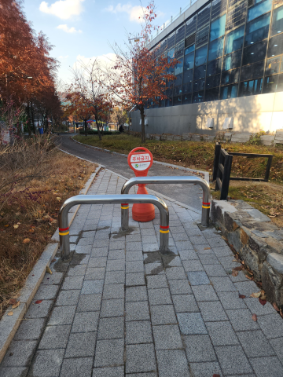
볼라드
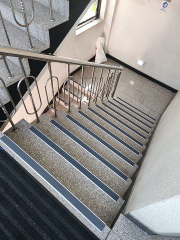
논슬립패드
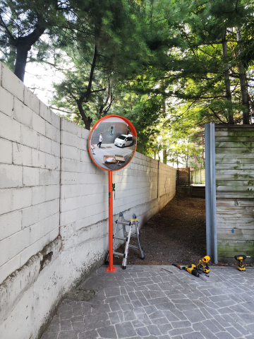
반사경
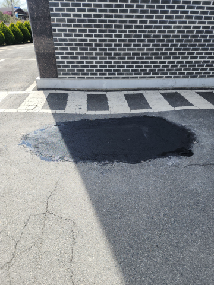
아스콘부분보수
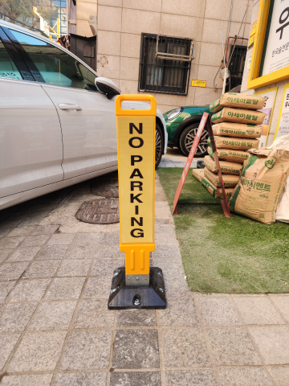
주차금지봉

차량진입판
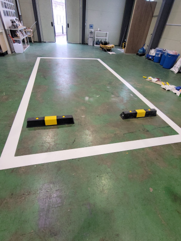
카스토퍼
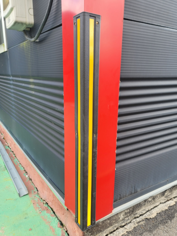
코너보호대
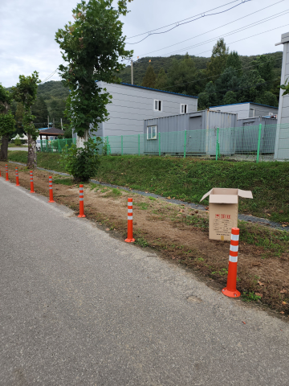
차선규제봉
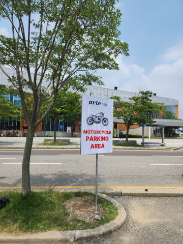
표지판설치
💬 고객들이 증명하는 만족도
"아스콘 파인 곳 소량 보수도 깔끔하게 해주시고 주변 정리까지 완벽했습니다."
"1개만 교체하는 거라 미안했는데, 너무 친절하게 수평까지 딱 맞춰주셨습니다."
"사각지대 반사경 위치를 전문가답게 딱 잡아주셔서 이제 주차하기 편안합니다."
"우리 주차장 자리에 외부차량이 자꾸 대서 주차금지봉 달았는데 스트레스 싹 날아갔어요."
"상가 앞 단차가 심해서 차량진입판 의뢰했는데 들뜸 하나 없이 깔끔하게 깔아주셨어요."
📌 부천시 소사구 송내동 볼라드 안내
집사남은 부천시 소사구 송내동 현장에서 볼라드 작업을 꼼꼼하게 진행합니다.
스텐볼라드 파손 교체 및 신규 앙카/매립 설치를 안전하게 진행해 드립니다.
※ 현장에서는 [볼라드, 스텐볼라드, 주차단속봉] 등 다양한 명칭으로 불리며 맞춤 시공이 가능합니다.
사진을 보내주시면 가장 빠르고 정확한 상담이 가능합니다.